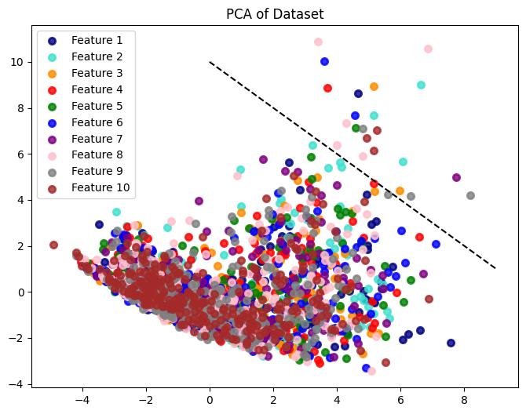

from google.colab import drive
drive.mount('/content/drive')
---------------------------------------------------------------------------
ModuleNotFoundError Traceback (most recent call last)
Cell In[1], line 1
----> 1 from google.colab import drive
2 drive.mount('/content/drive')
ModuleNotFoundError: No module named 'google.colab'
pip install librosa
Requirement already satisfied: librosa in /usr/local/lib/python3.10/dist-packages (0.10.1)
Requirement already satisfied: audioread>=2.1.9 in /usr/local/lib/python3.10/dist-packages (from librosa) (3.0.0)
Requirement already satisfied: numpy!=1.22.0,!=1.22.1,!=1.22.2,>=1.20.3 in /usr/local/lib/python3.10/dist-packages (from librosa) (1.23.5)
Requirement already satisfied: scipy>=1.2.0 in /usr/local/lib/python3.10/dist-packages (from librosa) (1.11.2)
Requirement already satisfied: scikit-learn>=0.20.0 in /usr/local/lib/python3.10/dist-packages (from librosa) (1.2.2)
Requirement already satisfied: joblib>=0.14 in /usr/local/lib/python3.10/dist-packages (from librosa) (1.3.2)
Requirement already satisfied: decorator>=4.3.0 in /usr/local/lib/python3.10/dist-packages (from librosa) (4.4.2)
Requirement already satisfied: numba>=0.51.0 in /usr/local/lib/python3.10/dist-packages (from librosa) (0.56.4)
Requirement already satisfied: soundfile>=0.12.1 in /usr/local/lib/python3.10/dist-packages (from librosa) (0.12.1)
Requirement already satisfied: pooch>=1.0 in /usr/local/lib/python3.10/dist-packages (from librosa) (1.7.0)
Requirement already satisfied: soxr>=0.3.2 in /usr/local/lib/python3.10/dist-packages (from librosa) (0.3.6)
Requirement already satisfied: typing-extensions>=4.1.1 in /usr/local/lib/python3.10/dist-packages (from librosa) (4.5.0)
Requirement already satisfied: lazy-loader>=0.1 in /usr/local/lib/python3.10/dist-packages (from librosa) (0.3)
Requirement already satisfied: msgpack>=1.0 in /usr/local/lib/python3.10/dist-packages (from librosa) (1.0.5)
Requirement already satisfied: llvmlite<0.40,>=0.39.0dev0 in /usr/local/lib/python3.10/dist-packages (from numba>=0.51.0->librosa) (0.39.1)
Requirement already satisfied: setuptools in /usr/local/lib/python3.10/dist-packages (from numba>=0.51.0->librosa) (67.7.2)
Requirement already satisfied: platformdirs>=2.5.0 in /usr/local/lib/python3.10/dist-packages (from pooch>=1.0->librosa) (3.10.0)
Requirement already satisfied: packaging>=20.0 in /usr/local/lib/python3.10/dist-packages (from pooch>=1.0->librosa) (23.1)
Requirement already satisfied: requests>=2.19.0 in /usr/local/lib/python3.10/dist-packages (from pooch>=1.0->librosa) (2.31.0)
Requirement already satisfied: threadpoolctl>=2.0.0 in /usr/local/lib/python3.10/dist-packages (from scikit-learn>=0.20.0->librosa) (3.2.0)
Requirement already satisfied: cffi>=1.0 in /usr/local/lib/python3.10/dist-packages (from soundfile>=0.12.1->librosa) (1.15.1)
Requirement already satisfied: pycparser in /usr/local/lib/python3.10/dist-packages (from cffi>=1.0->soundfile>=0.12.1->librosa) (2.21)
Requirement already satisfied: charset-normalizer<4,>=2 in /usr/local/lib/python3.10/dist-packages (from requests>=2.19.0->pooch>=1.0->librosa) (3.2.0)
Requirement already satisfied: idna<4,>=2.5 in /usr/local/lib/python3.10/dist-packages (from requests>=2.19.0->pooch>=1.0->librosa) (3.4)
Requirement already satisfied: urllib3<3,>=1.21.1 in /usr/local/lib/python3.10/dist-packages (from requests>=2.19.0->pooch>=1.0->librosa) (2.0.4)
Requirement already satisfied: certifi>=2017.4.17 in /usr/local/lib/python3.10/dist-packages (from requests>=2.19.0->pooch>=1.0->librosa) (2023.7.22)
%cd /content/drive/MyDrive/PSD/emosi
/content/drive/MyDrive/PSD/emosi
folders=['YAF_sad','YAF_pleasant_surprised','YAF_neutral',
'YAF_happy','YAF_fear','YAF_disgust','YAF_angry',
'OAF_Sad','OAF_Pleasant_surprise','OAF_neutral',
'OAF_happy','OAF_Fear','disgust',
'angry',
]
# Import Library
import os
import librosa
import numpy as np
import pandas as pd
from scipy.stats import skew, kurtosis, mode
def calculate_statistics(audio_path):
y, sr = librosa.load(audio_path)
# UNTUK MENGHITUNG NILAI STATISTIKA
mean = np.mean(y)
std_dev = np.std(y)
max_value = np.max(y)
min_value = np.min(y)
median = np.median(y)
skewness = skew(y) # Calculate skewness
kurt = kurtosis(y) # Calculate kurtosis
q1 = np.percentile(y, 25)
q3 = np.percentile(y, 75)
mode_value, _ = mode(y) # Calculate mode
iqr = q3 - q1
# UNTUK MENGHITUNG NILAI ZCR
zcr_mean = np.mean(librosa.feature.zero_crossing_rate(y=y))
zcr_median = np.median(librosa.feature.zero_crossing_rate(y=y))
zcr_std_dev = np.std(librosa.feature.zero_crossing_rate(y=y))
zcr_kurtosis = kurtosis(librosa.feature.zero_crossing_rate(y=y)[0])
zcr_skew = skew(librosa.feature.zero_crossing_rate(y=y)[0])
# UNTUK MENGHITUNG NILAI RMSE
rmse = np.sum(y**2) / len(y)
rmse_median = np.median(y**2)
rmse_std_dev = np.std(y**2)
rmse_kurtosis = kurtosis(y**2)
rmse_skew = skew(y**2)
return [zcr_mean, zcr_median, zcr_std_dev, zcr_kurtosis, zcr_skew, rmse, rmse_median, rmse_std_dev, rmse_kurtosis, rmse_skew]
features =[]
for folder in folders:
folder_path = f'{folder}'
for filename in os.listdir(folder_path):
if filename.endswith('.wav'):
audio_path = os.path.join(folder_path, filename)
statistics = calculate_statistics(audio_path)
features.append([folder, filename] + statistics)
# Membuat DataFrame dari data
columns = ['Label', 'File'] + ['ZCR Mean', 'ZCR Median', 'ZCR Std Dev', 'ZCR Kurtosis', 'ZCR Skew', 'RMSE', 'RMSE Median', 'RMSE Std Dev', 'RMSE Kurtosis', 'RMSE Skew']
df = pd.DataFrame(features, columns=columns)
# Menampilkan file CSV
df
| Label | File | ZCR Mean | ZCR Median | ZCR Std Dev | ZCR Kurtosis | ZCR Skew | RMSE | RMSE Median | RMSE Std Dev | RMSE Kurtosis | RMSE Skew | |
|---|---|---|---|---|---|---|---|---|---|---|---|---|
| 0 | YAF_sad | YAF_five_sad.wav | 0.168355 | 0.046875 | 0.224203 | 1.110286 | 1.543645 | 0.001743 | 0.000229 | 0.003828 | 18.782012 | 3.854990 |
| 1 | YAF_sad | YAF_far_sad.wav | 0.147078 | 0.033447 | 0.216568 | 1.950711 | 1.810082 | 0.001385 | 0.000220 | 0.002891 | 15.806340 | 3.585851 |
| 2 | YAF_sad | YAF_check_sad.wav | 0.165661 | 0.063965 | 0.216043 | 2.118684 | 1.783156 | 0.001376 | 0.000151 | 0.003176 | 22.182385 | 4.162531 |
| 3 | YAF_sad | YAF_join_sad.wav | 0.130321 | 0.031738 | 0.211256 | 2.716166 | 2.022808 | 0.001373 | 0.000317 | 0.002748 | 19.017952 | 3.842174 |
| 4 | YAF_sad | YAF_jail_sad.wav | 0.121712 | 0.036865 | 0.196020 | 3.673346 | 2.225937 | 0.003492 | 0.000581 | 0.006895 | 14.360406 | 3.403569 |
| ... | ... | ... | ... | ... | ... | ... | ... | ... | ... | ... | ... | ... |
| 2795 | angry | OAF_shall_angry.wav | 0.124545 | 0.069336 | 0.123647 | 1.199579 | 1.559375 | 0.002327 | 0.000171 | 0.005725 | 22.112604 | 4.195548 |
| 2796 | angry | OAF_mouse_angry.wav | 0.100349 | 0.054443 | 0.112813 | 3.240120 | 1.992513 | 0.003177 | 0.000199 | 0.007173 | 16.497961 | 3.659182 |
| 2797 | angry | OAF_pain_angry.wav | 0.097416 | 0.050781 | 0.117787 | 4.870260 | 2.323620 | 0.002614 | 0.000146 | 0.006855 | 27.579479 | 4.551090 |
| 2798 | angry | OAF_lot_angry.wav | 0.088930 | 0.055908 | 0.103065 | 6.091986 | 2.631815 | 0.002318 | 0.000237 | 0.006366 | 39.610165 | 5.619980 |
| 2799 | angry | OAF_talk_angry.wav | 0.093979 | 0.055908 | 0.094870 | 5.280359 | 2.386234 | 0.002647 | 0.000127 | 0.006810 | 24.467017 | 4.442155 |
2800 rows × 12 columns
df.to_csv('emosi2.csv',index=False)
from sklearn.preprocessing import StandardScaler
# Baca file CSV
dn = pd.read_csv("emosi2.csv")
# Tentukan kolom yang akan distandarisasi
kolom = ['ZCR Mean', 'ZCR Median', 'ZCR Std Dev', 'ZCR Kurtosis', 'ZCR Skew', 'RMSE', 'RMSE Median', 'RMSE Std Dev', 'RMSE Kurtosis', 'RMSE Skew']
# Inisialisasi StandardScaler
scaler = StandardScaler()
# Lakukan standarisasi pada kolom yang telah ditentukan
dn[kolom] = scaler.fit_transform(dn[kolom])
# Simpan DataFrame yang telah distandarisasi ke dalam file CSV baru
dn.to_csv("emosi2normalisasi.csv", index=False)
norm=pd.read_csv('emosi2normalisasi.csv')
norm
| Label | File | ZCR Mean | ZCR Median | ZCR Std Dev | ZCR Kurtosis | ZCR Skew | RMSE | RMSE Median | RMSE Std Dev | RMSE Kurtosis | RMSE Skew | |
|---|---|---|---|---|---|---|---|---|---|---|---|---|
| 0 | YAF_sad | YAF_five_sad.wav | 0.417567 | -0.632066 | 0.918615 | -0.857907 | -0.863771 | -0.095773 | 0.148228 | -0.195603 | -0.638306 | -0.724434 |
| 1 | YAF_sad | YAF_far_sad.wav | 0.022307 | -1.045013 | 0.756379 | -0.437007 | -0.322893 | -0.228551 | 0.111430 | -0.320760 | -0.712435 | -0.863297 |
| 2 | YAF_sad | YAF_check_sad.wav | 0.367532 | -0.106497 | 0.745229 | -0.352883 | -0.377554 | -0.232075 | -0.183732 | -0.282783 | -0.553596 | -0.565757 |
| 3 | YAF_sad | YAF_join_sad.wav | -0.288993 | -1.097570 | 0.643528 | -0.053653 | 0.108951 | -0.233002 | 0.527433 | -0.339909 | -0.632428 | -0.731046 |
| 4 | YAF_sad | YAF_jail_sad.wav | -0.448926 | -0.939899 | 0.319801 | 0.425721 | 0.521313 | 0.554133 | 1.656748 | 0.214162 | -0.748456 | -0.957346 |
| ... | ... | ... | ... | ... | ... | ... | ... | ... | ... | ... | ... | ... |
| 2795 | angry | OAF_shall_angry.wav | -0.396287 | 0.058681 | -1.217952 | -0.813188 | -0.831839 | 0.121467 | -0.101155 | 0.057880 | -0.555335 | -0.548721 |
| 2796 | angry | OAF_mouse_angry.wav | -0.845788 | -0.399314 | -1.448134 | 0.208753 | 0.047452 | 0.437184 | 0.019580 | 0.251264 | -0.695206 | -0.825462 |
| 2797 | angry | OAF_pain_angry.wav | -0.900272 | -0.511936 | -1.342461 | 1.025157 | 0.719613 | 0.228061 | -0.206343 | 0.208747 | -0.419145 | -0.365278 |
| 2798 | angry | OAF_lot_angry.wav | -1.057913 | -0.354265 | -1.655259 | 1.637021 | 1.345262 | 0.117841 | 0.183813 | 0.143426 | -0.119439 | 0.186219 |
| 2799 | angry | OAF_talk_angry.wav | -0.964110 | -0.354265 | -1.829384 | 1.230543 | 0.846723 | 0.240121 | -0.286667 | 0.202802 | -0.496682 | -0.421484 |
2800 rows × 12 columns
# Daftar kolom yang ingin dilewati
kolomlabel= ['Label','File',]
# Menghitung rata-rata untuk kolom numerik tertentu (mengabaikan kolom yang tidak diinginkan)
rata2= norm.drop(columns=kolomlabel).mean()
#membulatkan hasil komputasi dengan round dengan ketentuan 2 setelah koma, biar ga panjang bestiiiiiii
dibulatkan=rata2.round(2)
# Menampilkan rata-rata
print('--MEAN--')
print(dibulatkan)
--MEAN--
ZCR Mean 0.0
ZCR Median 0.0
ZCR Std Dev 0.0
ZCR Kurtosis -0.0
ZCR Skew -0.0
RMSE 0.0
RMSE Median 0.0
RMSE Std Dev -0.0
RMSE Kurtosis 0.0
RMSE Skew 0.0
dtype: float64
# Daftar kolom yang ingin dilewati
kolomlabel= ['Label','File']
# Menghitung rata-rata untuk kolom numerik tertentu (mengabaikan kolom yang tidak diinginkan)
standv= norm.drop(columns=kolomlabel).std()
#membulatkan hasil komputasi dengan round dengan ketentuan 2 setelah koma, biar ga panjang bestiiiiiii
bulatkan=standv.round(2)
# Menampilkan rata-rata
print('--STANDARD DEVIASI--')
print(bulatkan)
--STANDARD DEVIASI--
ZCR Mean 1.0
ZCR Median 1.0
ZCR Std Dev 1.0
ZCR Kurtosis 1.0
ZCR Skew 1.0
RMSE 1.0
RMSE Median 1.0
RMSE Std Dev 1.0
RMSE Kurtosis 1.0
RMSE Skew 1.0
dtype: float64
from sklearn.model_selection import train_test_split
from sklearn.preprocessing import StandardScaler
from sklearn.neighbors import KNeighborsClassifier
from pickle import dump
# Baca data dari file CSV
dataknn= pd.read_csv('emosi2.csv')
# Pisahkan fitur (X) dan label (y)
X = dataknn.drop(['Label','File'], axis=1) # Ganti 'target_column' dengan nama kolom target
y = dataknn['Label']
# split data into train and test sets
X_train,X_test,y_train, y_test= train_test_split(X, y, random_state=1, test_size=0.2)
# define scaler
scaler = StandardScaler()
# fit scaler on the training dataset
scaler.fit(X_train)
# save the scaler
dump(scaler, open('scaler.pkl', 'wb'))
# transform the training dataset
X_train_scaled = scaler.transform(X_train)
import pickle
with open('scaler.pkl', 'rb') as standarisasi:
loadscal= pickle.load(standarisasi)
X_test_scaled=loadscal.transform(X_test) #normalisasi X testing dari hasil normalisasi X train yang disimpan dalam model
from sklearn.metrics import accuracy_score
from sklearn.metrics import confusion_matrix
K = 30
acc = np.zeros((K-1))
for n in range(1,K,2):
knn = KNeighborsClassifier(n_neighbors= n, metric = "euclidean").fit(X_train_scaled, y_train)
y_pred = knn.predict(X_test_scaled)
acc[n-1]= accuracy_score(y_test,y_pred)
print('akurasi terbaik adalah ', acc.max(), 'dengan nilai k =', acc.argmax()+1)
akurasi terbaik adalah 0.7035714285714286 dengan nilai k = 7
knn = KNeighborsClassifier(n_neighbors= 13, metric = "euclidean")
dump(knn, open('modelknn.pkl', 'wb'))
#array=np.array([0.1722103851,0.0419921875,0.2303348292,1.158274856,1.556415655,0.001505466753,0.00024307908,0.0033376536,24.95338147,4.40281652])
#arnorm=loadscal.transform(array)
#arnorm
import pickle
with open('modelknn.pkl', 'rb') as knn:
loadknn= pickle.load(knn)
loadknn.fit(X_train_scaled, y_train)
KNeighborsClassifier(metric='euclidean', n_neighbors=13)In a Jupyter environment, please rerun this cell to show the HTML representation or trust the notebook.
On GitHub, the HTML representation is unable to render, please try loading this page with nbviewer.org.
KNeighborsClassifier(metric='euclidean', n_neighbors=13)
y_pred = loadknn.predict(X_test_scaled)
y_pred
array(['OAF_Pleasant_surprise', 'YAF_disgust', 'YAF_neutral',
'YAF_disgust', 'OAF_Sad', 'OAF_neutral', 'YAF_neutral', 'angry',
'disgust', 'OAF_Sad', 'YAF_sad', 'YAF_sad', 'angry', 'angry',
'disgust', 'OAF_Pleasant_surprise', 'OAF_Sad', 'YAF_neutral',
'angry', 'YAF_neutral', 'YAF_pleasant_surprised', 'OAF_neutral',
'angry', 'YAF_neutral', 'OAF_neutral', 'YAF_sad',
'YAF_pleasant_surprised', 'YAF_fear', 'disgust', 'OAF_Fear',
'OAF_neutral', 'OAF_happy', 'YAF_neutral', 'YAF_angry',
'YAF_neutral', 'YAF_fear', 'OAF_Fear', 'OAF_happy', 'YAF_happy',
'disgust', 'YAF_disgust', 'OAF_Sad', 'YAF_sad', 'YAF_happy',
'OAF_Pleasant_surprise', 'OAF_happy', 'YAF_fear', 'YAF_disgust',
'OAF_neutral', 'OAF_Sad', 'OAF_happy', 'OAF_happy', 'OAF_Sad',
'YAF_pleasant_surprised', 'YAF_sad', 'disgust', 'angry',
'OAF_Pleasant_surprise', 'YAF_disgust', 'OAF_Sad', 'OAF_happy',
'OAF_happy', 'OAF_Sad', 'angry', 'YAF_disgust', 'OAF_happy',
'angry', 'YAF_neutral', 'YAF_happy', 'YAF_fear', 'disgust',
'angry', 'OAF_Sad', 'OAF_Pleasant_surprise', 'angry',
'YAF_pleasant_surprised', 'OAF_happy', 'OAF_Sad', 'YAF_disgust',
'YAF_happy', 'YAF_neutral', 'YAF_neutral',
'YAF_pleasant_surprised', 'YAF_sad', 'YAF_disgust', 'YAF_fear',
'YAF_neutral', 'YAF_disgust', 'YAF_angry', 'YAF_neutral',
'YAF_pleasant_surprised', 'YAF_sad', 'YAF_fear',
'YAF_pleasant_surprised', 'disgust', 'disgust', 'YAF_neutral',
'YAF_neutral', 'YAF_fear', 'OAF_Fear', 'OAF_neutral', 'OAF_happy',
'OAF_Fear', 'YAF_pleasant_surprised', 'disgust', 'OAF_Sad',
'OAF_neutral', 'YAF_neutral', 'OAF_neutral', 'angry', 'disgust',
'YAF_sad', 'OAF_Sad', 'YAF_angry', 'OAF_Sad',
'YAF_pleasant_surprised', 'YAF_disgust', 'OAF_Fear', 'YAF_happy',
'OAF_happy', 'disgust', 'YAF_disgust', 'OAF_Fear', 'angry',
'YAF_fear', 'disgust', 'YAF_happy', 'OAF_Sad', 'OAF_happy',
'YAF_happy', 'YAF_angry', 'YAF_disgust', 'OAF_neutral',
'YAF_angry', 'OAF_Fear', 'YAF_happy', 'YAF_sad', 'YAF_disgust',
'disgust', 'OAF_neutral', 'YAF_sad', 'YAF_happy',
'YAF_pleasant_surprised', 'YAF_neutral', 'OAF_Sad', 'YAF_happy',
'YAF_happy', 'YAF_pleasant_surprised', 'YAF_pleasant_surprised',
'YAF_angry', 'YAF_fear', 'OAF_Fear', 'OAF_Pleasant_surprise',
'YAF_pleasant_surprised', 'YAF_happy', 'YAF_happy', 'OAF_neutral',
'disgust', 'YAF_happy', 'OAF_neutral', 'OAF_Sad', 'OAF_neutral',
'YAF_sad', 'YAF_angry', 'OAF_happy', 'OAF_happy', 'OAF_neutral',
'YAF_neutral', 'YAF_pleasant_surprised', 'YAF_pleasant_surprised',
'OAF_neutral', 'YAF_fear', 'YAF_disgust', 'YAF_sad', 'YAF_happy',
'YAF_sad', 'disgust', 'OAF_happy', 'YAF_neutral',
'YAF_pleasant_surprised', 'YAF_pleasant_surprised',
'YAF_pleasant_surprised', 'YAF_happy', 'YAF_happy', 'YAF_angry',
'YAF_happy', 'YAF_pleasant_surprised', 'OAF_Fear', 'YAF_angry',
'YAF_neutral', 'OAF_Sad', 'OAF_Sad', 'YAF_fear', 'YAF_neutral',
'disgust', 'OAF_neutral', 'YAF_fear', 'YAF_disgust', 'YAF_happy',
'YAF_angry', 'OAF_happy', 'OAF_Sad', 'OAF_neutral',
'YAF_pleasant_surprised', 'OAF_Fear', 'OAF_happy', 'angry',
'disgust', 'OAF_happy', 'disgust', 'OAF_Sad', 'OAF_neutral',
'OAF_happy', 'YAF_disgust', 'YAF_disgust',
'YAF_pleasant_surprised', 'OAF_Fear', 'YAF_neutral', 'angry',
'disgust', 'OAF_Fear', 'OAF_Sad', 'YAF_pleasant_surprised',
'YAF_neutral', 'OAF_neutral', 'YAF_sad', 'YAF_fear', 'YAF_fear',
'OAF_Sad', 'YAF_neutral', 'disgust', 'YAF_disgust',
'OAF_Pleasant_surprise', 'YAF_pleasant_surprised', 'OAF_happy',
'YAF_pleasant_surprised', 'YAF_happy', 'OAF_Sad', 'OAF_neutral',
'disgust', 'YAF_disgust', 'YAF_happy', 'YAF_sad', 'YAF_disgust',
'OAF_happy', 'OAF_Fear', 'YAF_pleasant_surprised', 'OAF_happy',
'YAF_fear', 'YAF_sad', 'OAF_happy', 'YAF_sad', 'OAF_happy',
'OAF_neutral', 'OAF_neutral', 'OAF_happy', 'OAF_Sad', 'YAF_fear',
'OAF_happy', 'OAF_happy', 'YAF_happy', 'OAF_neutral',
'OAF_Pleasant_surprise', 'YAF_sad', 'OAF_happy', 'YAF_angry',
'YAF_sad', 'OAF_Pleasant_surprise', 'YAF_angry', 'OAF_Sad',
'YAF_angry', 'YAF_disgust', 'OAF_happy', 'YAF_fear',
'OAF_Pleasant_surprise', 'YAF_angry', 'angry', 'OAF_Sad',
'YAF_neutral', 'OAF_happy', 'YAF_fear', 'disgust', 'YAF_disgust',
'YAF_neutral', 'OAF_Fear', 'disgust', 'disgust', 'YAF_angry',
'YAF_fear', 'OAF_Fear', 'OAF_neutral', 'YAF_pleasant_surprised',
'OAF_Sad', 'OAF_happy', 'OAF_Sad', 'OAF_happy',
'OAF_Pleasant_surprise', 'disgust', 'YAF_fear', 'disgust',
'OAF_Fear', 'YAF_happy', 'YAF_angry', 'OAF_neutral', 'YAF_disgust',
'YAF_neutral', 'angry', 'YAF_disgust', 'YAF_angry', 'OAF_Sad',
'angry', 'YAF_sad', 'disgust', 'OAF_neutral', 'OAF_happy',
'OAF_happy', 'OAF_Pleasant_surprise', 'YAF_pleasant_surprised',
'YAF_angry', 'YAF_neutral', 'YAF_disgust', 'OAF_happy', 'YAF_sad',
'YAF_pleasant_surprised', 'OAF_neutral', 'OAF_neutral', 'disgust',
'YAF_angry', 'OAF_Fear', 'OAF_happy', 'OAF_Pleasant_surprise',
'YAF_neutral', 'OAF_Fear', 'YAF_disgust', 'OAF_Sad',
'YAF_pleasant_surprised', 'YAF_disgust', 'OAF_Pleasant_surprise',
'OAF_neutral', 'OAF_Sad', 'OAF_neutral', 'YAF_angry', 'YAF_happy',
'YAF_disgust', 'YAF_pleasant_surprised', 'OAF_Fear', 'YAF_disgust',
'OAF_Fear', 'OAF_happy', 'YAF_disgust', 'OAF_happy', 'disgust',
'YAF_pleasant_surprised', 'OAF_neutral', 'YAF_angry', 'OAF_happy',
'OAF_Sad', 'OAF_Fear', 'OAF_happy', 'YAF_disgust', 'OAF_neutral',
'YAF_disgust', 'YAF_happy', 'YAF_disgust', 'OAF_Fear',
'YAF_neutral', 'OAF_Pleasant_surprise', 'YAF_happy', 'YAF_neutral',
'YAF_sad', 'YAF_pleasant_surprised', 'OAF_Fear', 'YAF_sad',
'disgust', 'YAF_disgust', 'YAF_pleasant_surprised', 'disgust',
'YAF_pleasant_surprised', 'OAF_Pleasant_surprise', 'OAF_happy',
'YAF_angry', 'YAF_fear', 'OAF_Pleasant_surprise', 'disgust',
'angry', 'YAF_disgust', 'YAF_sad', 'YAF_pleasant_surprised',
'angry', 'OAF_Pleasant_surprise', 'YAF_fear', 'YAF_neutral',
'OAF_neutral', 'YAF_disgust', 'OAF_Fear', 'disgust', 'OAF_Fear',
'YAF_fear', 'YAF_sad', 'YAF_neutral', 'angry',
'YAF_pleasant_surprised', 'OAF_Fear', 'YAF_angry', 'disgust',
'OAF_happy', 'angry', 'YAF_happy', 'angry', 'OAF_happy',
'YAF_pleasant_surprised', 'OAF_Sad', 'OAF_happy', 'OAF_Sad',
'YAF_angry', 'angry', 'OAF_happy', 'YAF_neutral',
'YAF_pleasant_surprised', 'YAF_happy', 'OAF_Sad', 'OAF_Fear',
'disgust', 'angry', 'disgust', 'YAF_neutral',
'OAF_Pleasant_surprise', 'YAF_disgust', 'YAF_neutral',
'YAF_disgust', 'YAF_neutral', 'YAF_angry', 'OAF_happy', 'YAF_fear',
'OAF_Fear', 'OAF_Fear', 'OAF_Pleasant_surprise', 'YAF_angry',
'OAF_Sad', 'YAF_pleasant_surprised', 'OAF_happy', 'OAF_Sad',
'disgust', 'YAF_pleasant_surprised', 'YAF_pleasant_surprised',
'YAF_sad', 'OAF_neutral', 'disgust', 'YAF_disgust', 'YAF_happy',
'YAF_angry', 'YAF_happy', 'YAF_disgust', 'YAF_neutral', 'OAF_Sad',
'YAF_angry', 'OAF_Sad', 'YAF_neutral', 'OAF_Fear', 'YAF_disgust',
'OAF_neutral', 'YAF_neutral', 'YAF_happy', 'OAF_Pleasant_surprise',
'YAF_sad', 'YAF_pleasant_surprised', 'YAF_disgust',
'OAF_Pleasant_surprise', 'OAF_happy', 'YAF_sad', 'angry',
'YAF_pleasant_surprised', 'YAF_fear', 'YAF_disgust', 'YAF_happy',
'OAF_happy', 'YAF_angry', 'OAF_Sad', 'OAF_Fear', 'OAF_neutral',
'YAF_pleasant_surprised', 'disgust', 'YAF_disgust', 'YAF_happy',
'OAF_neutral', 'YAF_neutral', 'YAF_neutral', 'YAF_angry',
'YAF_happy', 'OAF_happy', 'YAF_disgust', 'YAF_pleasant_surprised',
'angry', 'OAF_neutral', 'OAF_neutral', 'OAF_Sad', 'OAF_happy',
'YAF_happy', 'YAF_angry', 'YAF_pleasant_surprised', 'YAF_happy',
'YAF_sad', 'YAF_neutral', 'angry', 'YAF_disgust',
'OAF_Pleasant_surprise', 'YAF_happy', 'YAF_angry', 'YAF_happy',
'OAF_Pleasant_surprise', 'OAF_Pleasant_surprise', 'YAF_sad',
'disgust', 'disgust', 'OAF_Sad', 'YAF_neutral', 'YAF_happy',
'OAF_neutral', 'YAF_pleasant_surprised', 'YAF_disgust', 'OAF_Sad',
'YAF_happy', 'YAF_pleasant_surprised', 'disgust', 'OAF_Fear',
'YAF_sad', 'YAF_disgust', 'OAF_happy', 'YAF_angry', 'YAF_angry',
'YAF_neutral', 'YAF_neutral', 'OAF_happy', 'angry',
'OAF_Pleasant_surprise', 'OAF_Fear', 'angry', 'angry', 'OAF_Fear',
'angry', 'angry', 'OAF_happy', 'OAF_Sad', 'YAF_fear',
'OAF_neutral', 'YAF_disgust', 'YAF_happy', 'YAF_fear',
'OAF_neutral', 'YAF_angry', 'YAF_happy', 'OAF_Fear', 'OAF_neutral',
'OAF_happy', 'OAF_happy', 'YAF_pleasant_surprised',
'YAF_pleasant_surprised', 'OAF_Fear', 'OAF_Sad', 'YAF_disgust'],
dtype=object)
accuracy = accuracy_score(y_test,y_pred)
print("Akurasi:",accuracy)
Akurasi: 0.6946428571428571
import pandas as pd
from sklearn.decomposition import PCA
# Membaca data dari file CSV ke dalam DataFrame pandas
data = pd.read_csv('emosi2normalisasi.csv') # Ganti 'nama_file.csv' dengan nama file CSV yang sesuai
# Mengabaikan kolom-kolom yang berisi data teks
data = data.select_dtypes(include=[float, int]) # Memilih hanya kolom-kolom numerik
# Membuat objek PCA dan melakukan fitting pada data
pca = PCA(n_components=2)
pca.fit(data)
reduksi_pca = pca.transform(data)
# Sekarang Anda dapat menggunakan pca.components_ dan pca.explained_variance_ratio_ seperti sebelumnya
import matplotlib.pyplot as plt
import pandas as pd
from sklearn.decomposition import PCA
# Membaca data dari file CSV
data = pd.read_csv('emosi2normalisasi.csv') # Ganti 'nama_file.csv' dengan nama file CSV yang sesuai
data = data.select_dtypes(include=[float, int])
# Menerapkan PCA dengan dua komponen utama
pca = PCA(n_components=2)
X_r = pca.fit(data).transform(data)
# Membuat scatter plot dengan 10 warna berbeda
plt.figure(figsize=(8, 6)) # Mengatur ukuran figure
colors = ['navy', 'turquoise', 'darkorange', 'red', 'green', 'blue', 'purple', 'pink', 'gray', 'brown']
lw = 2
for i, color in enumerate(colors):
plt.scatter(X_r[i::len(colors), 0], X_r[i::len(colors), 1], color=color, alpha=0.8, lw=lw, label=f'Feature {i + 1}')
plt.legend(loc='best', shadow=False, scatterpoints=1)
plt.title('PCA of Dataset')
# Tambahkan plot atau grafik yang sesuai di sini
# Misalnya, grafik garis
x_values = [0, 1, 2, 3, 4, 5, 6, 7, 8, 9] # Anda perlu mengganti x_values dan y_values dengan data yang sesuai
y_values = [10, 9, 8, 7, 6, 5, 4, 3, 2, 1]
plt.plot(x_values, y_values, color='black', linestyle='--', label='Grafik Contoh')
plt.show()

print(pca.explained_variance_ratio_)
[0.49641847 0.21440367]
print(pca.singular_values_)
[117.89706183 77.48098345]
import pandas as pd
from sklearn.decomposition import PCA
import matplotlib.pyplot as plt
labels = data[['ZCR Mean', 'ZCR Median', 'ZCR Std Dev', 'ZCR Kurtosis', 'ZCR Skew', 'RMSE', 'RMSE Median', 'RMSE Std Dev', 'RMSE Kurtosis', 'RMSE Skew']]
# Membuat scatter plot
plt.figure(figsize=(8, 6)) # Mengatur ukuran figure
plt.scatter(reduksi_pca[:, 0], reduksi_pca[:, 1])
# Menampilkan label untuk setiap titik data
for i, (x, y) in enumerate(zip(reduksi_pca[:, 0], reduksi_pca[:, 1])):
plt.text(x, y, labels.iloc[i], fontsize=12, ha='right') # Menggunakan labels.iloc[i] untuk mengakses label setiap baris
plt.title('Scatter Plot Hasil PCA')
plt.xlabel('Komponen Utama 1')
plt.ylabel('Komponen Utama 2')
plt.show()
---------------------------------------------------------------------------
ValueError Traceback (most recent call last)
<ipython-input-29-91e8779d3f83> in <cell line: 11>()
10 # Menampilkan label untuk setiap titik data
11 for i, (x, y) in enumerate(zip(reduksi_pca[:, 0], reduksi_pca[:, 1])):
---> 12 plt.text(x, y, labels.iloc[i], fontsize=12, ha='right') # Menggunakan labels.iloc[i] untuk mengakses label setiap baris
13
14 plt.title('Scatter Plot Hasil PCA')
/usr/local/lib/python3.10/dist-packages/matplotlib/pyplot.py in text(x, y, s, fontdict, **kwargs)
2983 @_copy_docstring_and_deprecators(Axes.text)
2984 def text(x, y, s, fontdict=None, **kwargs):
-> 2985 return gca().text(x, y, s, fontdict=fontdict, **kwargs)
2986
2987
/usr/local/lib/python3.10/dist-packages/matplotlib/axes/_axes.py in text(self, x, y, s, fontdict, **kwargs)
687 **kwargs,
688 }
--> 689 t = mtext.Text(x, y, text=s, **effective_kwargs)
690 t.set_clip_path(self.patch)
691 self._add_text(t)
/usr/local/lib/python3.10/dist-packages/matplotlib/_api/deprecation.py in wrapper(*args, **kwargs)
452 "parameter will become keyword-only %(removal)s.",
453 name=name, obj_type=f"parameter of {func.__name__}()")
--> 454 return func(*args, **kwargs)
455
456 # Don't modify *func*'s signature, as boilerplate.py needs it.
/usr/local/lib/python3.10/dist-packages/matplotlib/text.py in __init__(self, x, y, text, color, verticalalignment, horizontalalignment, multialignment, fontproperties, rotation, linespacing, rotation_mode, usetex, wrap, transform_rotates_text, parse_math, **kwargs)
166 self._x, self._y = x, y
167 self._text = ''
--> 168 self._reset_visual_defaults(
169 text=text,
170 color=color,
/usr/local/lib/python3.10/dist-packages/matplotlib/text.py in _reset_visual_defaults(self, text, color, fontproperties, usetex, parse_math, wrap, verticalalignment, horizontalalignment, multialignment, rotation, transform_rotates_text, linespacing, rotation_mode)
199 rotation_mode=None,
200 ):
--> 201 self.set_text(text)
202 self.set_color(
203 color if color is not None else mpl.rcParams["text.color"])
/usr/local/lib/python3.10/dist-packages/matplotlib/text.py in set_text(self, s)
1277 if s is None:
1278 s = ''
-> 1279 if s != self._text:
1280 self._text = str(s)
1281 self.stale = True
/usr/local/lib/python3.10/dist-packages/pandas/core/generic.py in __nonzero__(self)
1525 @final
1526 def __nonzero__(self) -> NoReturn:
-> 1527 raise ValueError(
1528 f"The truth value of a {type(self).__name__} is ambiguous. "
1529 "Use a.empty, a.bool(), a.item(), a.any() or a.all()."
ValueError: The truth value of a Series is ambiguous. Use a.empty, a.bool(), a.item(), a.any() or a.all().